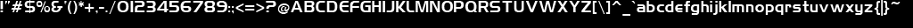
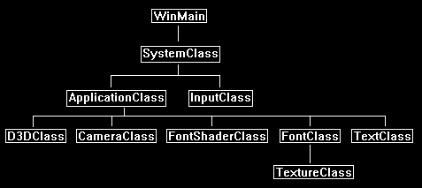

Writing text onto the screen is an important function of any application.
Rendering text in DirectX 11 requires that you first know how to render 2D images.
As we covered that topic in the previous tutorials we will now build on that knowledge.
The first thing you are going to need is your own font image.
I built a really simple one with the characters I wanted and put it on a 1024x32 tga texture:

As you can see it has all the basic characters we need and they are all on a single texture file.
We can now build a simple font engine which uses an index into that texture to draw individual characters to the screen as needed.
How we do that in DirectX 11 is we build a square out of two triangles and then render the single character from the texture onto that square.
So, if we have a sentence, we figure out the characters we need, create a square for each one of them, and then render the characters to those squares.
After doing that we render all the squares onto the screen to the location that forms the sentence.
This is the same method we used in the previous tutorials to render a 2D image to the screen.
Now to index the texture we will need a text file that gives the location and size of each character in the texture.
This text file will allow the font engine to quickly grab the pixels it needs out of the texture to form a character that it can render.
Below is the index file for this font texture.
This format of the file is: [Ascii value of character] [The character] [Left Texture U coordinate] [Right Texture U Coordinate] [Pixel Width of Character]
32 0.0 0.0 0
33 ! 0.0 0.00390625 4
34 " 0.0048828125 0.0107421875 6
35 # 0.01171875 0.025390625 14
36 $ 0.0263671875 0.0390625 13
37 % 0.0400390625 0.0546875 15
38 & 0.0556640625 0.0693359375 14
39 ' 0.0703125 0.0732421875 3
40 ( 0.07421875 0.0791015625 5
41 ) 0.080078125 0.0849609375 5
42 * 0.0859375 0.091796875 6
43 + 0.0927734375 0.103515625 11
44 , 0.1044921875 0.107421875 3
45 - 0.1083984375 0.1142578125 6
46 . 0.115234375 0.1181640625 3
47 / 0.119140625 0.126953125 8
48 0 0.1279296875 0.1416015625 14
49 1 0.142578125 0.146484375 4
50 2 0.1474609375 0.1591796875 12
51 3 0.16015625 0.1708984375 11
52 4 0.171875 0.1845703125 13
53 5 0.185546875 0.1962890625 11
54 6 0.197265625 0.2099609375 13
55 7 0.2109375 0.22265625 12
56 8 0.2236328125 0.236328125 13
57 9 0.2373046875 0.2490234375 12
58 : 0.25 0.2529296875 3
59 ; 0.25390625 0.2568359375 3
60 < 0.2578125 0.267578125 10
61 = 0.2685546875 0.279296875 11
62 > 0.2802734375 0.2900390625 10
63 ? 0.291015625 0.302734375 12
64 @ 0.3037109375 0.3173828125 14
65 A 0.318359375 0.33203125 14
66 B 0.3330078125 0.3447265625 12
67 C 0.345703125 0.3564453125 11
68 D 0.357421875 0.3701171875 13
69 E 0.37109375 0.3818359375 11
70 F 0.3828125 0.3935546875 11
71 G 0.39453125 0.40625 12
72 H 0.4072265625 0.41796875 11
73 I 0.4189453125 0.421875 3
74 J 0.4228515625 0.4326171875 10
75 K 0.43359375 0.4443359375 11
76 L 0.4453125 0.4541015625 9
77 M 0.455078125 0.4697265625 15
78 N 0.470703125 0.482421875 12
79 O 0.4833984375 0.49609375 13
80 P 0.4970703125 0.5078125 12
81 Q 0.509765625 0.5224609375 13
82 R 0.5234375 0.53515625 12
83 S 0.5361328125 0.548828125 13
84 T 0.5498046875 0.5615234375 12
85 U 0.5625 0.57421875 12
86 V 0.5751953125 0.5888671875 14
87 W 0.58984375 0.609375 20
88 X 0.6103515625 0.6220703125 12
89 Y 0.623046875 0.6357421875 13
90 Z 0.63671875 0.6474609375 11
91 [ 0.6484375 0.654296875 6
92 \ 0.6552734375 0.6630859375 8
93 ] 0.6640625 0.6689453125 5
94 ^ 0.669921875 0.6806640625 11
95 _ 0.681640625 0.6904296875 9
96 ` 0.69140625 0.6962890625 5
97 a 0.697265625 0.70703125 10
98 b 0.7080078125 0.7177734375 10
99 c 0.71875 0.7275390625 9
100 d 0.728515625 0.73828125 10
101 e 0.7392578125 0.748046875 9
102 f 0.7490234375 0.755859375 7
103 g 0.7568359375 0.7666015625 10
104 h 0.767578125 0.7763671875 9
105 i 0.77734375 0.7802734375 3
106 j 0.78125 0.7861328125 5
107 k 0.787109375 0.796875 10
108 l 0.7978515625 0.80078125 3
109 m 0.8017578125 0.8154296875 14
110 n 0.81640625 0.826171875 10
111 o 0.8271484375 0.8369140625 10
112 p 0.837890625 0.84765625 10
113 q 0.8486328125 0.8583984375 10
114 r 0.859375 0.8671875 8
115 s 0.8681640625 0.8779296875 10
116 t 0.87890625 0.8857421875 7
117 u 0.88671875 0.8955078125 9
118 v 0.896484375 0.908203125 12
119 w 0.9091796875 0.9248046875 16
120 x 0.92578125 0.935546875 10
121 y 0.9365234375 0.9453125 9
122 z 0.9462890625 0.9560546875 10
123 { 0.95703125 0.9638671875 7
124 | 0.96484375 0.966796875 2
125 } 0.9677734375 0.974609375 7
126 ~ 0.9755859375 0.986328125 11
With both the index file and texture file we have what we need to build the font engine.
If you need to build your own index file, just make sure that each character is only separated by spaces and you can write a bitmap parser yourself to create TU and TV coordinates based on where there are no blank spaces.
Remember that different users will run your application in different resolutions.
A single size font is not going to be clearly readable on all resolutions.
So, you may want to make 3-4 different font sizes and use certain ones for certain resolutions to fix this problem.
Framework
As we will want to encapsulate the font functionality in its own set of classes, we will add some new classes to our frame work.
The updated frame work looks like the following:

In this tutorial we have three new classes called TextClass, FontClass, and FontShaderClass.
FontShaderClass is the shader for rendering fonts similar to how TextureShaderClass was used for rendering bitmap images in the previous tutorial.
FontClass holds the font data and constructs vertex buffers needed for rendering strings.
TextClass contains the vertex and index buffers for each set of text strings that need to be rendered to the screen, it uses FontClass to create the vertex buffer for the strings and then uses FontShaderClass to render those buffers.
Fontclass.h
We will look at the new FontClass first.
This class will handle the texture for the font, the font data from the text file, and the function used to build vertex buffers with the font data.
The vertex buffers that hold the font data for individual sentences will be in the TextClass and not inside this class.
So, this will just construct our sentences for us and give us access to the font texture when we are ready to render.
////////////////////////////////////////////////////////////////////////////////
// Filename: fontclass.h
////////////////////////////////////////////////////////////////////////////////
#ifndef _FONTCLASS_H_
#define _FONTCLASS_H_
//////////////
// INCLUDES //
//////////////
#include <directxmath.h>
#include <fstream>
using namespace DirectX;
using namespace std;
///////////////////////
// MY CLASS INCLUDES //
///////////////////////
#include "textureclass.h"
////////////////////////////////////////////////////////////////////////////////
// Class name: FontClass
////////////////////////////////////////////////////////////////////////////////
class FontClass
{
private:
The FontType structure is used to hold the indexing data read in from the font index file.
The left and right are the TU texture coordinates.
The size is the width of the character in pixels.
struct FontType
{
float left, right;
int size;
};
The VertexType structure is for the actual vertex data used to build the square to render the text character on.
The individual character will require two triangles to make a square.
Those triangles will have position and texture data only.
struct VertexType
{
XMFLOAT3 position;
XMFLOAT2 texture;
};
public:
FontClass();
FontClass(const FontClass&);
~FontClass();
bool Initialize(ID3D11Device*, ID3D11DeviceContext*, int);
void Shutdown();
ID3D11ShaderResourceView* GetTexture();
BuildVertexArray will handle building and returning a vertex array of triangles that will render the character sentence which was given as input to this function.
This function will be called by the new TextClass to build vertex arrays of all the sentences it needs to render.
So, we basically give it the sentence we want to render, and it sends us back the prebuilt vertex array for us to keep in the TextClass.
It is simply a builder type class.
void BuildVertexArray(void*, char*, float, float);
int GetSentencePixelLength(char*);
int GetFontHeight();
private:
bool LoadFontData(char*);
void ReleaseFontData();
bool LoadTexture(ID3D11Device*, ID3D11DeviceContext*, char*);
void ReleaseTexture();
private:
FontType* m_Font;
TextureClass* m_Texture;
float m_fontHeight;
int m_spaceSize;
};
#endif
Fontclass.cpp
///////////////////////////////////////////////////////////////////////////////
// Filename: fontclass.cpp
///////////////////////////////////////////////////////////////////////////////
#include "fontclass.h"
The class constructor initializes all the private member variables for the FontClass to null.
FontClass::FontClass()
{
m_Font = 0;
m_Texture = 0;
}
FontClass::FontClass(const FontClass& other)
{
}
FontClass::~FontClass()
{
}
Initialize will load the font data and the font texture.
bool FontClass::Initialize(ID3D11Device* device, ID3D11DeviceContext* deviceContext, int fontChoice)
{
char fontFilename[128];
char fontTextureFilename[128];
bool result;
We place a case statement here so we can expand this easily later by adding additional fonts.
For now, the only option will be the first font we use in this tutorial.
If an incorrect fontChoice is sent as input then we default to the first font always.
// Choose one of the available fonts, and default to the first font otherwise.
switch(fontChoice)
{
case 0:
{
strcpy_s(fontFilename, "../Engine/data/font/font01.txt");
strcpy_s(fontTextureFilename, "../Engine/data/font/font01.tga");
m_fontHeight = 32.0f;
m_spaceSize = 3;
break;
}
default:
{
strcpy_s(fontFilename, "../Engine/data/font/font01.txt");
strcpy_s(fontTextureFilename, "../Engine/data/font/font01.tga");
m_fontHeight = 32.0f;
m_spaceSize = 3;
break;
}
}
// Load in the text file containing the font data.
result = LoadFontData(fontFilename);
if(!result)
{
return false;
}
// Load the texture that has the font characters on it.
result = LoadTexture(device, deviceContext, fontTextureFilename);
if(!result)
{
return false;
}
return true;
}
Shutdown will release the font data and the font texture.
void FontClass::Shutdown()
{
// Release the font texture.
ReleaseTexture();
// Release the font data.
ReleaseFontData();
return;
}
The LoadFontData function is where we load the font01.txt file which contains the indexing information for the texture.
bool FontClass::LoadFontData(char* filename)
{
ifstream fin;
int i;
char temp;
First, we create an array of the FontType structure.
The size of the array is set to 95 as that is the number of characters in the texture and hence the number of indexes in the font01.txt file.
// Create the font spacing buffer.
m_Font = new FontType[95];
Now we open the file and read each line into the array m_Font.
We only need to read in the texture TU left and right coordinates as well as the pixel size of the character.
// Read in the font size and spacing between chars.
fin.open(filename);
if(fin.fail())
{
return false;
}
// Read in the 95 used ascii characters for text.
for(i=0; i<95; i++)
{
fin.get(temp);
while(temp != ' ')
{
fin.get(temp);
}
fin.get(temp);
while(temp != ' ')
{
fin.get(temp);
}
fin >> m_Font[i].left;
fin >> m_Font[i].right;
fin >> m_Font[i].size;
}
// Close the file.
fin.close();
return true;
}
The ReleaseFontData function releases the array that holds the texture indexing data.
void FontClass::ReleaseFontData()
{
// Release the font data array.
if(m_Font)
{
delete [] m_Font;
m_Font = 0;
}
return;
}
The LoadTexture function reads in the font01.tga file into the texture shader resource.
This will be the texture we take the characters from and write them to their own square polygons for rendering.
bool FontClass::LoadTexture(ID3D11Device* device, ID3D11DeviceContext* deviceContext, char* filename)
{
bool result;
// Create and initialize the font texture object.
m_Texture = new TextureClass;
result = m_Texture->Initialize(device, deviceContext, filename);
if(!result)
{
return false;
}
return true;
}
ReleaseTexture function releases the texture that was used for the font.
void FontClass::ReleaseTexture()
{
// Release the texture object.
if(m_Texture)
{
m_Texture->Shutdown();
delete m_Texture;
m_Texture = 0;
}
return;
}
GetTexture returns the font texture so the font graphics can be rendered.
ID3D11ShaderResourceView* FontClass::GetTexture()
{
return m_Texture->GetTexture();
}
BuildVertexArray will be called by the TextClass to build vertex buffers out of the text sentences it sends to this function as input.
This way the sentence in the TextClass that needs to be drawn has its own vertex buffer that can be rendered easily after being created.
The vertices input is the pointer to the vertex array that will be returned to the TextClass once it is built.
The sentence input is the text sentence that will be used to create the vertex array.
The drawX and drawY input variables are the screen coordinates of where to draw the sentence.
void FontClass::BuildVertexArray(void* vertices, char* sentence, float drawX, float drawY)
{
VertexType* vertexPtr;
int numLetters, index, i, letter;
// Coerce the input vertices into a VertexType structure.
vertexPtr = (VertexType*)vertices;
// Get the number of letters in the sentence.
numLetters = (int)strlen(sentence);
// Initialize the index to the vertex array.
index = 0;
The following loop will now build the vertex and index arrays.
It takes each character from the sentence and creates two triangles for it.
It then maps the character from the font texture onto those two triangles using the m_Font array which has the TU texture coordinates and pixel size.
Once the polygon for that character has been created it then updates the X coordinate on the screen of where to draw the next character.
// Draw each letter onto a quad.
for(i=0; i<numLetters; i++)
{
letter = ((int)sentence[i]) - 32;
// If the letter is a space then just move over three pixels.
if(letter == 0)
{
drawX = drawX + m_spaceSize;
}
else
{
// First triangle in quad.
vertexPtr[index].position = XMFLOAT3(drawX, drawY, 0.0f); // Top left.
vertexPtr[index].texture = XMFLOAT2(m_Font[letter].left, 0.0f);
index++;
vertexPtr[index].position = XMFLOAT3((drawX + m_Font[letter].size), (drawY - m_fontHeight), 0.0f); // Bottom right.
vertexPtr[index].texture = XMFLOAT2(m_Font[letter].right, 1.0f);
index++;
vertexPtr[index].position = XMFLOAT3(drawX, (drawY - m_fontHeight), 0.0f); // Bottom left.
vertexPtr[index].texture = XMFLOAT2(m_Font[letter].left, 1.0f);
index++;
// Second triangle in quad.
vertexPtr[index].position = XMFLOAT3(drawX, drawY, 0.0f); // Top left.
vertexPtr[index].texture = XMFLOAT2(m_Font[letter].left, 0.0f);
index++;
vertexPtr[index].position = XMFLOAT3(drawX + m_Font[letter].size, drawY, 0.0f); // Top right.
vertexPtr[index].texture = XMFLOAT2(m_Font[letter].right, 0.0f);
index++;
vertexPtr[index].position = XMFLOAT3((drawX + m_Font[letter].size), (drawY - m_fontHeight), 0.0f); // Bottom right.
vertexPtr[index].texture = XMFLOAT2(m_Font[letter].right, 1.0f);
index++;
// Update the x location for drawing by the size of the letter and one pixel.
drawX = drawX + m_Font[letter].size + 1.0f;
}
}
return;
}
The GetSentencePixelLength function returns how long the sentence is in terms of pixels.
You can use this for centering or otherwise positioning the text sentences on the screen.
int FontClass::GetSentencePixelLength(char* sentence)
{
int pixelLength, numLetters, i, letter;
pixelLength = 0;
numLetters = (int)strlen(sentence);
for(i=0; i<numLetters; i++)
{
letter = ((int)sentence[i]) - 32;
// If the letter is a space then count it as three pixels.
if(letter == 0)
{
pixelLength += m_spaceSize;
}
else
{
pixelLength += (m_Font[letter].size + 1);
}
}
return pixelLength;
}
The GetFontHeight function is the other function that helps position sentences on the screen.
With the width from GetSentencePixelLength and the height from this function, we have all the information we need to position sentences.
int FontClass::GetFontHeight()
{
return (int)m_fontHeight;
}
Font.vs
The font vertex shader is just a modified version of the texture vertex shader in the previous tutorials that was used to render 2D images.
The only change is the vertex shader name.
////////////////////////////////////////////////////////////////////////////////
// Filename: font.vs
////////////////////////////////////////////////////////////////////////////////
/////////////
// GLOBALS //
/////////////
cbuffer MatrixBuffer
{
matrix worldMatrix;
matrix viewMatrix;
matrix projectionMatrix;
};
//////////////
// TYPEDEFS //
//////////////
struct VertexInputType
{
float4 position : POSITION;
float2 tex : TEXCOORD0;
};
struct PixelInputType
{
float4 position : SV_POSITION;
float2 tex : TEXCOORD0;
};
////////////////////////////////////////////////////////////////////////////////
// Vertex Shader
////////////////////////////////////////////////////////////////////////////////
PixelInputType FontVertexShader(VertexInputType input)
{
PixelInputType output;
// Change the position vector to be 4 units for proper matrix calculations.
input.position.w = 1.0f;
// Calculate the position of the vertex against the world, view, and projection matrices.
output.position = mul(input.position, worldMatrix);
output.position = mul(output.position, viewMatrix);
output.position = mul(output.position, projectionMatrix);
// Store the texture coordinates for the pixel shader.
output.tex = input.tex;
return output;
}
Font.ps
////////////////////////////////////////////////////////////////////////////////
// Filename: font.ps
////////////////////////////////////////////////////////////////////////////////
/////////////
// GLOBALS //
/////////////
Texture2D shaderTexture : register(t0);
SamplerState SampleType : register(s0);
We have a new constant buffer that contains the pixelColor value.
We use this to control the color of the pixel that will be used to draw the font text.
cbuffer PixelBuffer
{
float4 pixelColor;
};
//////////////
// TYPEDEFS //
//////////////
struct PixelInputType
{
float4 position : SV_POSITION;
float2 tex : TEXCOORD0;
};
The FontPixelShader first samples the font texture to get the pixel.
If it samples a pixel that is black then it is just part of the background triangle and not a text pixel.
In this case we set the alpha of this pixel to zero so when the blending is calculated it will determine that this pixel should be see-through.
If the color of the input pixel is not black then it is a text pixel.
In this case we multiply it by the pixelColor to get the pixel colored the way we want and then draw that to the screen.
////////////////////////////////////////////////////////////////////////////////
// Pixel Shader
////////////////////////////////////////////////////////////////////////////////
float4 FontPixelShader(PixelInputType input) : SV_TARGET
{
float4 color;
// Sample the texture pixel at this location.
color = shaderTexture.Sample(SampleType, input.tex);
// If the color is black on the texture then treat this pixel as transparent.
if(color.r == 0.0f)
{
color.a = 0.0f;
}
// If the color is other than black on the texture then this is a pixel in the font so draw it using the font pixel color.
else
{
color.a = 1.0f;
color = color * pixelColor;
}
return color;
}
Fontshaderclass.h
The FontShaderClass is just the TextureShaderClass from the previous tutorial renamed with a couple code changes for rendering fonts.
////////////////////////////////////////////////////////////////////////////////
// Filename: fontshaderclass.h
////////////////////////////////////////////////////////////////////////////////
#ifndef _FONTSHADERCLASS_H_
#define _FONTSHADERCLASS_H_
//////////////
// INCLUDES //
//////////////
#include <d3d11.h>
#include <d3dcompiler.h>
#include <directxmath.h>
#include <fstream>
using namespace DirectX;
using namespace std;
////////////////////////////////////////////////////////////////////////////////
// Class name: FontShaderClass
////////////////////////////////////////////////////////////////////////////////
class FontShaderClass
{
private:
struct MatrixBufferType
{
XMMATRIX world;
XMMATRIX view;
XMMATRIX projection;
};
We have a new structure type to match the PixleBuffer in the pixel shader.
It contains just the pixel color of the text that will be rendered.
struct PixelBufferType
{
XMFLOAT4 pixelColor;
};
public:
FontShaderClass();
FontShaderClass(const FontShaderClass&);
~FontShaderClass();
bool Initialize(ID3D11Device*, HWND);
void Shutdown();
bool Render(ID3D11DeviceContext*, int, XMMATRIX, XMMATRIX, XMMATRIX, ID3D11ShaderResourceView*, XMFLOAT4);
private:
bool InitializeShader(ID3D11Device*, HWND, WCHAR*, WCHAR*);
void ShutdownShader();
void OutputShaderErrorMessage(ID3D10Blob*, HWND, WCHAR*);
bool SetShaderParameters(ID3D11DeviceContext*, XMMATRIX, XMMATRIX, XMMATRIX, ID3D11ShaderResourceView*, XMFLOAT4);
void RenderShader(ID3D11DeviceContext*, int);
private:
ID3D11VertexShader* m_vertexShader;
ID3D11PixelShader* m_pixelShader;
ID3D11InputLayout* m_layout;
ID3D11Buffer* m_matrixBuffer;
ID3D11SamplerState* m_sampleState;
The FontShaderClass has a constant buffer for the pixel color that will be used to render the text fonts with color.
ID3D11Buffer* m_pixelBuffer;
};
#endif
Fontshaderclass.cpp
////////////////////////////////////////////////////////////////////////////////
// Filename: fontshaderclass.cpp
////////////////////////////////////////////////////////////////////////////////
#include "fontshaderclass.h"
FontShaderClass::FontShaderClass()
{
m_vertexShader = 0;
m_pixelShader = 0;
m_layout = 0;
m_matrixBuffer = 0;
m_sampleState = 0;
We initialize the pixel color constant buffer to null in the class constructor.
m_pixelBuffer = 0;
}
FontShaderClass::FontShaderClass(const FontShaderClass& other)
{
}
FontShaderClass::~FontShaderClass()
{
}
bool FontShaderClass::Initialize(ID3D11Device* device, HWND hwnd)
{
bool result;
wchar_t vsFilename[128];
wchar_t psFilename[128];
int error;
Initialize loads the new font vertex shader and pixel shader HLSL files.
// Set the filename of the vertex shader.
error = wcscpy_s(vsFilename, 128, L"../Engine/font.vs");
if(error != 0)
{
return false;
}
// Set the filename of the pixel shader.
error = wcscpy_s(psFilename, 128, L"../Engine/font.ps");
if(error != 0)
{
return false;
}
// Initialize the vertex and pixel shaders.
result = InitializeShader(device, hwnd, vsFilename, psFilename);
if(!result)
{
return false;
}
return true;
}
Shutdown calls ShutdownShader which releases the font shader related pointers and data.
void FontShaderClass::Shutdown()
{
// Shutdown the vertex and pixel shaders as well as the related objects.
ShutdownShader();
return;
}
Render will set the shader parameters and then draw the buffers using the font shader.
Notice the is the same as TextureShaderClass except that it takes in the new pixelColor parameter.
bool FontShaderClass::Render(ID3D11DeviceContext* deviceContext, int indexCount, XMMATRIX worldMatrix, XMMATRIX viewMatrix,
XMMATRIX projectionMatrix, ID3D11ShaderResourceView* texture, XMFLOAT4 pixelColor)
{
bool result;
// Set the shader parameters that it will use for rendering.
result = SetShaderParameters(deviceContext, worldMatrix, viewMatrix, projectionMatrix, texture, pixelColor);
if(!result)
{
return false;
}
// Now render the prepared buffers with the shader.
RenderShader(deviceContext, indexCount);
return true;
}
The InitializeShader function loads the new HLSL font vertex and pixel shaders as well as the pointers that interface with the shader.
bool FontShaderClass::InitializeShader(ID3D11Device* device, HWND hwnd, WCHAR* vsFilename, WCHAR* psFilename)
{
HRESULT result;
ID3D10Blob* errorMessage;
ID3D10Blob* vertexShaderBuffer;
ID3D10Blob* pixelShaderBuffer;
D3D11_INPUT_ELEMENT_DESC polygonLayout[2];
unsigned int numElements;
D3D11_BUFFER_DESC matrixBufferDesc;
D3D11_SAMPLER_DESC samplerDesc;
D3D11_BUFFER_DESC pixelBufferDesc;
// Initialize the pointers this function will use to null.
errorMessage = 0;
vertexShaderBuffer = 0;
pixelShaderBuffer = 0;
The name of the vertex shader has been changed to FontVertexShader.
// Compile the vertex shader code.
result = D3DCompileFromFile(vsFilename, NULL, NULL, "FontVertexShader", "vs_5_0", D3D10_SHADER_ENABLE_STRICTNESS, 0,
&vertexShaderBuffer, &errorMessage);
if(FAILED(result))
{
// If the shader failed to compile it should have writen something to the error message.
if(errorMessage)
{
OutputShaderErrorMessage(errorMessage, hwnd, vsFilename);
}
// If there was nothing in the error message then it simply could not find the shader file itself.
else
{
MessageBox(hwnd, vsFilename, L"Missing Shader File", MB_OK);
}
return false;
}
The name of the pixel shader has been changed to FontPixelShader.
// Compile the pixel shader code.
result = D3DCompileFromFile(psFilename, NULL, NULL, "FontPixelShader", "ps_5_0", D3D10_SHADER_ENABLE_STRICTNESS, 0,
&pixelShaderBuffer, &errorMessage);
if(FAILED(result))
{
// If the shader failed to compile it should have writen something to the error message.
if(errorMessage)
{
OutputShaderErrorMessage(errorMessage, hwnd, psFilename);
}
// If there was nothing in the error message then it simply could not find the file itself.
else
{
MessageBox(hwnd, psFilename, L"Missing Shader File", MB_OK);
}
return false;
}
// Create the vertex shader from the buffer.
result = device->CreateVertexShader(vertexShaderBuffer->GetBufferPointer(), vertexShaderBuffer->GetBufferSize(), NULL, &m_vertexShader);
if(FAILED(result))
{
return false;
}
// Create the pixel shader from the buffer.
result = device->CreatePixelShader(pixelShaderBuffer->GetBufferPointer(), pixelShaderBuffer->GetBufferSize(), NULL, &m_pixelShader);
if(FAILED(result))
{
return false;
}
// Create the vertex input layout description.
polygonLayout[0].SemanticName = "POSITION";
polygonLayout[0].SemanticIndex = 0;
polygonLayout[0].Format = DXGI_FORMAT_R32G32B32_FLOAT;
polygonLayout[0].InputSlot = 0;
polygonLayout[0].AlignedByteOffset = 0;
polygonLayout[0].InputSlotClass = D3D11_INPUT_PER_VERTEX_DATA;
polygonLayout[0].InstanceDataStepRate = 0;
polygonLayout[1].SemanticName = "TEXCOORD";
polygonLayout[1].SemanticIndex = 0;
polygonLayout[1].Format = DXGI_FORMAT_R32G32_FLOAT;
polygonLayout[1].InputSlot = 0;
polygonLayout[1].AlignedByteOffset = D3D11_APPEND_ALIGNED_ELEMENT;
polygonLayout[1].InputSlotClass = D3D11_INPUT_PER_VERTEX_DATA;
polygonLayout[1].InstanceDataStepRate = 0;
// Get a count of the elements in the layout.
numElements = sizeof(polygonLayout) / sizeof(polygonLayout[0]);
// Create the vertex input layout.
result = device->CreateInputLayout(polygonLayout, numElements, vertexShaderBuffer->GetBufferPointer(),
vertexShaderBuffer->GetBufferSize(), &m_layout);
if(FAILED(result))
{
return false;
}
// Release the vertex shader buffer and pixel shader buffer since they are no longer needed.
vertexShaderBuffer->Release();
vertexShaderBuffer = 0;
pixelShaderBuffer->Release();
pixelShaderBuffer = 0;
// Setup the description of the dynamic matrix constant buffer that is in the vertex shader.
matrixBufferDesc.Usage = D3D11_USAGE_DYNAMIC;
matrixBufferDesc.ByteWidth = sizeof(MatrixBufferType);
matrixBufferDesc.BindFlags = D3D11_BIND_CONSTANT_BUFFER;
matrixBufferDesc.CPUAccessFlags = D3D11_CPU_ACCESS_WRITE;
matrixBufferDesc.MiscFlags = 0;
matrixBufferDesc.StructureByteStride = 0;
// Create the constant buffer pointer so we can access the vertex shader constant buffer from within this class.
result = device->CreateBuffer(&matrixBufferDesc, NULL, &m_matrixBuffer);
if(FAILED(result))
{
return false;
}
// Create a texture sampler state description.
samplerDesc.Filter = D3D11_FILTER_MIN_MAG_MIP_LINEAR;
samplerDesc.AddressU = D3D11_TEXTURE_ADDRESS_WRAP;
samplerDesc.AddressV = D3D11_TEXTURE_ADDRESS_WRAP;
samplerDesc.AddressW = D3D11_TEXTURE_ADDRESS_WRAP;
samplerDesc.MipLODBias = 0.0f;
samplerDesc.MaxAnisotropy = 1;
samplerDesc.ComparisonFunc = D3D11_COMPARISON_ALWAYS;
samplerDesc.BorderColor[0] = 0;
samplerDesc.BorderColor[1] = 0;
samplerDesc.BorderColor[2] = 0;
samplerDesc.BorderColor[3] = 0;
samplerDesc.MinLOD = 0;
samplerDesc.MaxLOD = D3D11_FLOAT32_MAX;
// Create the texture sampler state.
result = device->CreateSamplerState(&samplerDesc, &m_sampleState);
if(FAILED(result))
{
return false;
}
Here we setup the new pixel color constant buffer that will allow this class to set the pixel color in the pixel shader.
// Setup the description of the dynamic pixel constant buffer that is in the pixel shader.
pixelBufferDesc.Usage = D3D11_USAGE_DYNAMIC;
pixelBufferDesc.ByteWidth = sizeof(PixelBufferType);
pixelBufferDesc.BindFlags = D3D11_BIND_CONSTANT_BUFFER;
pixelBufferDesc.CPUAccessFlags = D3D11_CPU_ACCESS_WRITE;
pixelBufferDesc.MiscFlags = 0;
pixelBufferDesc.StructureByteStride = 0;
// Create the pixel constant buffer pointer so we can access the pixel shader constant buffer from within this class.
result = device->CreateBuffer(&pixelBufferDesc, NULL, &m_pixelBuffer);
if(FAILED(result))
{
return false;
}
return true;
}
The ShutdownShader function releases all the shader related data.
void FontShaderClass::ShutdownShader()
{
The new pixel color constant buffer is released here.
// Release the pixel constant buffer.
if(m_pixelBuffer)
{
m_pixelBuffer->Release();
m_pixelBuffer = 0;
}
// Release the sampler state.
if(m_sampleState)
{
m_sampleState->Release();
m_sampleState = 0;
}
// Release the matrix constant buffer.
if(m_matrixBuffer)
{
m_matrixBuffer->Release();
m_matrixBuffer = 0;
}
// Release the layout.
if(m_layout)
{
m_layout->Release();
m_layout = 0;
}
// Release the pixel shader.
if(m_pixelShader)
{
m_pixelShader->Release();
m_pixelShader = 0;
}
// Release the vertex shader.
if(m_vertexShader)
{
m_vertexShader->Release();
m_vertexShader = 0;
}
return;
}
OutputShaderErrorMessage writes any shader compilation errors to a text file that can be reviewed in the event of a failure in compilation.
void FontShaderClass::OutputShaderErrorMessage(ID3D10Blob* errorMessage, HWND hwnd, WCHAR* shaderFilename)
{
char* compileErrors;
unsigned long long bufferSize, i;
ofstream fout;
// Get a pointer to the error message text buffer.
compileErrors = (char*)(errorMessage->GetBufferPointer());
// Get the length of the message.
bufferSize = errorMessage->GetBufferSize();
// Open a file to write the error message to.
fout.open("shader-error.txt");
// Write out the error message.
for(i=0; i<bufferSize; i++)
{
fout << compileErrors[i];
}
// Close the file.
fout.close();
// Release the error message.
errorMessage->Release();
errorMessage = 0;
// Pop a message up on the screen to notify the user to check the text file for compile errors.
MessageBox(hwnd, L"Error compiling shader. Check shader-error.txt for message.", shaderFilename, MB_OK);
return;
}
The SetShaderParameters function sets all the shader variables before rendering.
bool FontShaderClass::SetShaderParameters(ID3D11DeviceContext* deviceContext, XMMATRIX worldMatrix, XMMATRIX viewMatrix,
XMMATRIX projectionMatrix, ID3D11ShaderResourceView* texture, XMFLOAT4 pixelColor)
{
HRESULT result;
D3D11_MAPPED_SUBRESOURCE mappedResource;
MatrixBufferType* dataPtr;
unsigned int bufferNumber;
PixelBufferType* dataPtr2;
// Transpose the matrices to prepare them for the shader.
worldMatrix = XMMatrixTranspose(worldMatrix);
viewMatrix = XMMatrixTranspose(viewMatrix);
projectionMatrix = XMMatrixTranspose(projectionMatrix);
// Lock the constant buffer so it can be written to.
result = deviceContext->Map(m_matrixBuffer, 0, D3D11_MAP_WRITE_DISCARD, 0, &mappedResource);
if(FAILED(result))
{
return false;
}
// Get a pointer to the data in the constant buffer.
dataPtr = (MatrixBufferType*)mappedResource.pData;
// Copy the matrices into the constant buffer.
dataPtr->world = worldMatrix;
dataPtr->view = viewMatrix;
dataPtr->projection = projectionMatrix;
// Unlock the constant buffer.
deviceContext->Unmap(m_matrixBuffer, 0);
// Set the position of the constant buffer in the vertex shader.
bufferNumber = 0;
// Finally set the constant buffer in the vertex shader with the updated values.
deviceContext->VSSetConstantBuffers(bufferNumber, 1, &m_matrixBuffer);
// Set shader texture resource in the pixel shader.
deviceContext->PSSetShaderResources(0, 1, &texture);
Here is where we set the pixel color before rendering.
We lock the pixel constant buffer and then set the pixel color inside it and unlock it again.
We set the constant buffer position in the pixel shader and it is ready for use.
// Lock the pixel constant buffer so it can be written to.
result = deviceContext->Map(m_pixelBuffer, 0, D3D11_MAP_WRITE_DISCARD, 0, &mappedResource);
if(FAILED(result))
{
return false;
}
// Get a pointer to the data in the pixel constant buffer.
dataPtr2 = (PixelBufferType*)mappedResource.pData;
// Copy the pixel color into the pixel constant buffer.
dataPtr2->pixelColor = pixelColor;
// Unlock the pixel constant buffer.
deviceContext->Unmap(m_pixelBuffer, 0);
// Set the position of the pixel constant buffer in the pixel shader.
bufferNumber = 0;
// Now set the pixel constant buffer in the pixel shader with the updated value.
deviceContext->PSSetConstantBuffers(bufferNumber, 1, &m_pixelBuffer);
return true;
}
RenderShader draws the prepared font vertex/index buffers using the font shader.
void FontShaderClass::RenderShader(ID3D11DeviceContext* deviceContext, int indexCount)
{
// Set the vertex input layout.
deviceContext->IASetInputLayout(m_layout);
// Set the vertex and pixel shaders that will be used to render this triangle.
deviceContext->VSSetShader(m_vertexShader, NULL, 0);
deviceContext->PSSetShader(m_pixelShader, NULL, 0);
// Set the sampler state in the pixel shader.
deviceContext->PSSetSamplers(0, 1, &m_sampleState);
// Render the triangle.
deviceContext->DrawIndexed(indexCount, 0, 0);
return;
}
Textclass.h
The TextClass handles storing and rendering the 2D text vertex data.
It renders 2D text to the screen and uses the FontClass and FontShaderClass to assist it in doing so.
////////////////////////////////////////////////////////////////////////////////
// Filename: textclass.h
////////////////////////////////////////////////////////////////////////////////
#ifndef _TEXTCLASS_H_
#define _TEXTCLASS_H_
///////////////////////
// MY CLASS INCLUDES //
///////////////////////
#include "fontclass.h"
////////////////////////////////////////////////////////////////////////////////
// Class name: TextClass
////////////////////////////////////////////////////////////////////////////////
class TextClass
{
private:
The VertexType must match the one in the FontClass.
struct VertexType
{
XMFLOAT3 position;
XMFLOAT2 texture;
};
public:
TextClass();
TextClass(const TextClass&);
~TextClass();
The Initialize function will build a vertex buffer of the desired sentence.
Shutdown will release the vertex buffer.
And the Render function will draw the buffers for the text sentence.
bool Initialize(ID3D11Device*, ID3D11DeviceContext*, int, int, int, FontClass*, char*, int, int, float, float, float);
void Shutdown();
void Render(ID3D11DeviceContext*);
int GetIndexCount();
The UpdateText function will allow us to change the contents of the sentence so we can just reuse TextClass objects.
The GetPixelColor function allows us the return the color of this sentence so that the shader knows what color to render it.
bool UpdateText(ID3D11DeviceContext*, FontClass*, char*, int, int, float, float, float);
XMFLOAT4 GetPixelColor();
private:
bool InitializeBuffers(ID3D11Device*, ID3D11DeviceContext*, FontClass*, char*, int, int, float, float, float);
void ShutdownBuffers();
void RenderBuffers(ID3D11DeviceContext*);
private:
ID3D11Buffer *m_vertexBuffer, *m_indexBuffer;
int m_screenWidth, m_screenHeight, m_maxLength, m_vertexCount, m_indexCount;
XMFLOAT4 m_pixelColor;
};
#endif
Textclass.cpp
///////////////////////////////////////////////////////////////////////////////
// Filename: textclass.cpp
///////////////////////////////////////////////////////////////////////////////
#include "textclass.h"
TextClass::TextClass()
{
m_vertexBuffer = 0;
m_indexBuffer = 0;
}
TextClass::TextClass(const TextClass& other)
{
}
TextClass::~TextClass()
{
}
The Initialize function will store the information needed to return the sentence and then call InitializeBuffers to build the sentence.
bool TextClass::Initialize(ID3D11Device* device, ID3D11DeviceContext* deviceContext, int screenWidth, int screenHeight, int maxLength, FontClass* Font, char* text,
int positionX, int positionY, float red, float green, float blue)
{
bool result;
// Store the screen width and height.
m_screenWidth = screenWidth;
m_screenHeight = screenHeight;
// Store the maximum length of the sentence.
m_maxLength = maxLength;
// Initalize the sentence.
result = InitializeBuffers(device, deviceContext, Font, text, positionX, positionY, red, green, blue);
if(!result)
{
return false;
}
return true;
}
The Shutdown function will release the buffers used to render the sentence.
void TextClass::Shutdown()
{
// Release the vertex and index buffers.
ShutdownBuffers();
return;
}
The Render function draws the text sentence.
void TextClass::Render(ID3D11DeviceContext* deviceContext)
{
// Put the vertex and index buffers on the graphics pipeline to prepare them for drawing.
RenderBuffers(deviceContext);
return;
}
The GetIndexCount function returns the number of indices in the text sentence.
int TextClass::GetIndexCount()
{
return m_indexCount;
}
The InitializeBuffers function is where we build the vertex buffer for rendering the text sentence.
bool TextClass::InitializeBuffers(ID3D11Device* device, ID3D11DeviceContext* deviceContext, FontClass* Font, char* text, int positionX, int positionY, float red, float green, float blue)
{
VertexType* vertices;
unsigned long* indices;
D3D11_BUFFER_DESC vertexBufferDesc, indexBufferDesc;
D3D11_SUBRESOURCE_DATA vertexData, indexData;
HRESULT result;
int i;
First, we initialize and create our vertex and index arrays.
// Set the vertex and index count.
m_vertexCount = 6 * m_maxLength;
m_indexCount = m_vertexCount;
// Create the vertex array.
vertices = new VertexType[m_vertexCount];
// Create the index array.
indices = new unsigned long[m_indexCount];
// Initialize vertex array to zeros at first.
memset(vertices, 0, (sizeof(VertexType) * m_vertexCount));
// Initialize the index array.
for(i=0; i<m_indexCount; i++)
{
indices[i] = i;
}
Then we use those vertex and index arrays to create the DirectX vertex and index buffers.
These won't contain any data for rendering just yet though.
// Set up the description of the dynamic vertex buffer.
vertexBufferDesc.Usage = D3D11_USAGE_DYNAMIC;
vertexBufferDesc.ByteWidth = sizeof(VertexType) * m_vertexCount;
vertexBufferDesc.BindFlags = D3D11_BIND_VERTEX_BUFFER;
vertexBufferDesc.CPUAccessFlags = D3D11_CPU_ACCESS_WRITE;
vertexBufferDesc.MiscFlags = 0;
vertexBufferDesc.StructureByteStride = 0;
// Give the subresource structure a pointer to the vertex data.
vertexData.pSysMem = vertices;
vertexData.SysMemPitch = 0;
vertexData.SysMemSlicePitch = 0;
// Create the vertex buffer.
result = device->CreateBuffer(&vertexBufferDesc, &vertexData, &m_vertexBuffer);
if(FAILED(result))
{
return false;
}
// Set up the description of the static index buffer.
indexBufferDesc.Usage = D3D11_USAGE_DEFAULT;
indexBufferDesc.ByteWidth = sizeof(unsigned long) * m_indexCount;
indexBufferDesc.BindFlags = D3D11_BIND_INDEX_BUFFER;
indexBufferDesc.CPUAccessFlags = 0;
indexBufferDesc.MiscFlags = 0;
indexBufferDesc.StructureByteStride = 0;
// Give the subresource structure a pointer to the index data.
indexData.pSysMem = indices;
indexData.SysMemPitch = 0;
indexData.SysMemSlicePitch = 0;
// Create the index buffer.
result = device->CreateBuffer(&indexBufferDesc, &indexData, &m_indexBuffer);
if(FAILED(result))
{
return false;
}
// Release the vertex array as it is no longer needed.
delete [] vertices;
vertices = 0;
// Release the index array as it is no longer needed.
delete [] indices;
indices = 0;
Now that the DirectX buffers have been created, we call the UpdateText function to actually build the sentence vertex and index data to populate these newly created buffers.
// Now add the text data to the sentence buffers.
result = UpdateText(deviceContext, Font, text, positionX, positionY, red, green, blue);
if(!result)
{
return false;
}
return true;
}
The ShutdownBuffers function will release the vertex and index buffers.
void TextClass::ShutdownBuffers()
{
// Release the index buffer.
if(m_indexBuffer)
{
m_indexBuffer->Release();
m_indexBuffer = 0;
}
// Release the vertex buffer.
if(m_vertexBuffer)
{
m_vertexBuffer->Release();
m_vertexBuffer = 0;
}
return;
}
The UpdateText function is where we build the sentence rendering data and store it in the buffers for rendering.
bool TextClass::UpdateText(ID3D11DeviceContext* deviceContext, FontClass* Font, char* text, int positionX, int positionY, float red, float green, float blue)
{
int numLetters;
VertexType* vertices;
float drawX, drawY;
HRESULT result;
D3D11_MAPPED_SUBRESOURCE mappedResource;
VertexType* verticesPtr;
First, we store the color that this sentence should be rendered in.
// Store the color of the sentence.
m_pixelColor = XMFLOAT4(red, green, blue, 1.0f);
Next, we will do a quick check to make sure the sentence will actually fit in the buffer we originally allocated.
// Get the number of letters in the sentence.
numLetters = (int)strlen(text);
// Check for possible buffer overflow.
if(numLetters > m_maxLength)
{
return false;
}
Then we create an empty vertex array where we will store the rendering data.
// Create the vertex array.
vertices = new VertexType[m_vertexCount];
// Initialize vertex array to zeros at first.
memset(vertices, 0, (sizeof(VertexType) * m_vertexCount));
Next, we determine the initial location on the screen where this sentence will be rendered.
// Calculate the X and Y pixel position on the screen to start drawing to.
drawX = (float)(((m_screenWidth / 2) * -1) + positionX);
drawY = (float)((m_screenHeight / 2) - positionY);
And now we use the FontClass object to build the vertex rendering data.
We send in the empty vertices array, the text, and the location to draw it at.
From that the FontClass will build the vertex data we need to render the sentence and send it back to us inside the vertices array.
// Use the font class to build the vertex array from the sentence text and sentence draw location.
Font->BuildVertexArray((void*)vertices, text, drawX, drawY);
Now that we have the text sentence built into the vertices array, we can now copy it into the empty DirectX buffers so that we can now render the text data.
// Lock the vertex buffer so it can be written to.
result = deviceContext->Map(m_vertexBuffer, 0, D3D11_MAP_WRITE_DISCARD, 0, &mappedResource);
if(FAILED(result))
{
return false;
}
// Get a pointer to the data in the vertex buffer.
verticesPtr = (VertexType*)mappedResource.pData;
// Copy the data into the vertex buffer.
memcpy(verticesPtr, (void*)vertices, (sizeof(VertexType) * m_vertexCount));
// Unlock the vertex buffer.
deviceContext->Unmap(m_vertexBuffer, 0);
// Release the vertex array as it is no longer needed.
delete [] vertices;
vertices = 0;
return true;
}
The RenderBuffers function will render the vertex and index buffers holding the text sentence data.
void TextClass::RenderBuffers(ID3D11DeviceContext* deviceContext)
{
unsigned int stride, offset;
// Set vertex buffer stride and offset.
stride = sizeof(VertexType);
offset = 0;
// Set the vertex buffer to active in the input assembler so it can be rendered.
deviceContext->IASetVertexBuffers(0, 1, &m_vertexBuffer, &stride, &offset);
// Set the index buffer to active in the input assembler so it can be rendered.
deviceContext->IASetIndexBuffer(m_indexBuffer, DXGI_FORMAT_R32_UINT, 0);
// Set the type of primitive that should be rendered from this vertex buffer, in this case triangles.
deviceContext->IASetPrimitiveTopology(D3D11_PRIMITIVE_TOPOLOGY_TRIANGLELIST);
return;
}
The GetPixelColor function will return the color that this sentence should be rendered as.
XMFLOAT4 TextClass::GetPixelColor()
{
return m_pixelColor;
}
D3dclass.h
We have also modified the D3DClass in this tutorial to incorporate blending states.
Blending allows the font to blend with the 3D objects in the background.
If we don't turn on blending, we see the black triangles behind the text.
But with blending turned on only the pixels for the text show up on the screen and the rest of the triangle is completely see-through.
I won't get into great detail about blending here but a simple blend was needed for this tutorial to work correctly.
////////////////////////////////////////////////////////////////////////////////
// Filename: d3dclass.h
////////////////////////////////////////////////////////////////////////////////
#ifndef _D3DCLASS_H_
#define _D3DCLASS_H_
/////////////
// LINKING //
/////////////
#pragma comment(lib, "d3d11.lib")
#pragma comment(lib, "dxgi.lib")
#pragma comment(lib, "d3dcompiler.lib")
//////////////
// INCLUDES //
//////////////
#include <d3d11.h>
#include <directxmath.h>
using namespace DirectX;
////////////////////////////////////////////////////////////////////////////////
// Class name: D3DClass
////////////////////////////////////////////////////////////////////////////////
class D3DClass
{
public:
D3DClass();
D3DClass(const D3DClass&);
~D3DClass();
bool Initialize(int, int, bool, HWND, bool, float, float);
void Shutdown();
void BeginScene(float, float, float, float);
void EndScene();
ID3D11Device* GetDevice();
ID3D11DeviceContext* GetDeviceContext();
void GetProjectionMatrix(XMMATRIX&);
void GetWorldMatrix(XMMATRIX&);
void GetOrthoMatrix(XMMATRIX&);
void GetVideoCardInfo(char*, int&);
void SetBackBufferRenderTarget();
void ResetViewport();
void TurnZBufferOn();
void TurnZBufferOff();
We have two new functions for turning on and off alpha blending.
void EnableAlphaBlending();
void DisableAlphaBlending();
private:
bool m_vsync_enabled;
int m_videoCardMemory;
char m_videoCardDescription[128];
IDXGISwapChain* m_swapChain;
ID3D11Device* m_device;
ID3D11DeviceContext* m_deviceContext;
ID3D11RenderTargetView* m_renderTargetView;
ID3D11Texture2D* m_depthStencilBuffer;
ID3D11DepthStencilState* m_depthStencilState;
ID3D11DepthStencilView* m_depthStencilView;
ID3D11RasterizerState* m_rasterState;
XMMATRIX m_projectionMatrix;
XMMATRIX m_worldMatrix;
XMMATRIX m_orthoMatrix;
D3D11_VIEWPORT m_viewport;
ID3D11DepthStencilState* m_depthDisabledStencilState;
We have two new blending states as well.
ID3D11BlendState* m_alphaEnableBlendingState;
ID3D11BlendState* m_alphaDisableBlendingState;
};
#endif
D3dclass.cpp
////////////////////////////////////////////////////////////////////////////////
// Filename: d3dclass.cpp
////////////////////////////////////////////////////////////////////////////////
#include "d3dclass.h"
D3DClass::D3DClass()
{
m_swapChain = 0;
m_device = 0;
m_deviceContext = 0;
m_renderTargetView = 0;
m_depthStencilBuffer = 0;
m_depthStencilState = 0;
m_depthStencilView = 0;
m_rasterState = 0;
m_depthDisabledStencilState = 0;
Set the two new blending states to null.
m_alphaEnableBlendingState = 0;
m_alphaDisableBlendingState = 0;
}
D3DClass::D3DClass(const D3DClass& other)
{
}
D3DClass::~D3DClass()
{
}
bool D3DClass::Initialize(int screenWidth, int screenHeight, bool vsync, HWND hwnd, bool fullscreen, float screenDepth, float screenNear)
{
HRESULT result;
IDXGIFactory* factory;
IDXGIAdapter* adapter;
IDXGIOutput* adapterOutput;
unsigned int numModes, i, numerator, denominator;
unsigned long long stringLength;
DXGI_MODE_DESC* displayModeList;
DXGI_ADAPTER_DESC adapterDesc;
int error;
DXGI_SWAP_CHAIN_DESC swapChainDesc;
D3D_FEATURE_LEVEL featureLevel;
ID3D11Texture2D* backBufferPtr;
D3D11_TEXTURE2D_DESC depthBufferDesc;
D3D11_DEPTH_STENCIL_DESC depthStencilDesc;
D3D11_DEPTH_STENCIL_VIEW_DESC depthStencilViewDesc;
D3D11_RASTERIZER_DESC rasterDesc;
float fieldOfView, screenAspect;
D3D11_DEPTH_STENCIL_DESC depthDisabledStencilDesc;
We have a new description variable for setting up the two new blend states.
D3D11_BLEND_DESC blendStateDescription;
// Store the vsync setting.
m_vsync_enabled = vsync;
// Create a DirectX graphics interface factory.
result = CreateDXGIFactory(__uuidof(IDXGIFactory), (void**)&factory);
if(FAILED(result))
{
return false;
}
// Use the factory to create an adapter for the primary graphics interface (video card).
result = factory->EnumAdapters(0, &adapter);
if(FAILED(result))
{
return false;
}
// Enumerate the primary adapter output (monitor).
result = adapter->EnumOutputs(0, &adapterOutput);
if(FAILED(result))
{
return false;
}
// Get the number of modes that fit the DXGI_FORMAT_R8G8B8A8_UNORM display format for the adapter output (monitor).
result = adapterOutput->GetDisplayModeList(DXGI_FORMAT_R8G8B8A8_UNORM, DXGI_ENUM_MODES_INTERLACED, &numModes, NULL);
if(FAILED(result))
{
return false;
}
// Create a list to hold all the possible display modes for this monitor/video card combination.
displayModeList = new DXGI_MODE_DESC[numModes];
if(!displayModeList)
{
return false;
}
// Now fill the display mode list structures.
result = adapterOutput->GetDisplayModeList(DXGI_FORMAT_R8G8B8A8_UNORM, DXGI_ENUM_MODES_INTERLACED, &numModes, displayModeList);
if(FAILED(result))
{
return false;
}
// Now go through all the display modes and find the one that matches the screen width and height.
// When a match is found store the numerator and denominator of the refresh rate for that monitor.
for(i=0; i<numModes; i++)
{
if(displayModeList[i].Width == (unsigned int)screenWidth)
{
if(displayModeList[i].Height == (unsigned int)screenHeight)
{
numerator = displayModeList[i].RefreshRate.Numerator;
denominator = displayModeList[i].RefreshRate.Denominator;
}
}
}
// Get the adapter (video card) description.
result = adapter->GetDesc(&adapterDesc);
if(FAILED(result))
{
return false;
}
// Store the dedicated video card memory in megabytes.
m_videoCardMemory = (int)(adapterDesc.DedicatedVideoMemory / 1024 / 1024);
// Convert the name of the video card to a character array and store it.
error = wcstombs_s(&stringLength, m_videoCardDescription, 128, adapterDesc.Description, 128);
if(error != 0)
{
return false;
}
// Release the display mode list.
delete [] displayModeList;
displayModeList = 0;
// Release the adapter output.
adapterOutput->Release();
adapterOutput = 0;
// Release the adapter.
adapter->Release();
adapter = 0;
// Release the factory.
factory->Release();
factory = 0;
// Initialize the swap chain description.
ZeroMemory(&swapChainDesc, sizeof(swapChainDesc));
// Set to a single back buffer.
swapChainDesc.BufferCount = 1;
// Set the width and height of the back buffer.
swapChainDesc.BufferDesc.Width = screenWidth;
swapChainDesc.BufferDesc.Height = screenHeight;
// Set regular 32-bit surface for the back buffer.
swapChainDesc.BufferDesc.Format = DXGI_FORMAT_R8G8B8A8_UNORM;
// Set the refresh rate of the back buffer.
if(m_vsync_enabled)
{
swapChainDesc.BufferDesc.RefreshRate.Numerator = numerator;
swapChainDesc.BufferDesc.RefreshRate.Denominator = denominator;
}
else
{
swapChainDesc.BufferDesc.RefreshRate.Numerator = 0;
swapChainDesc.BufferDesc.RefreshRate.Denominator = 1;
}
// Set the usage of the back buffer.
swapChainDesc.BufferUsage = DXGI_USAGE_RENDER_TARGET_OUTPUT;
// Set the handle for the window to render to.
swapChainDesc.OutputWindow = hwnd;
// Turn multisampling off.
swapChainDesc.SampleDesc.Count = 1;
swapChainDesc.SampleDesc.Quality = 0;
// Set to full screen or windowed mode.
if(fullscreen)
{
swapChainDesc.Windowed = false;
}
else
{
swapChainDesc.Windowed = true;
}
// Set the scan line ordering and scaling to unspecified.
swapChainDesc.BufferDesc.ScanlineOrdering = DXGI_MODE_SCANLINE_ORDER_UNSPECIFIED;
swapChainDesc.BufferDesc.Scaling = DXGI_MODE_SCALING_UNSPECIFIED;
// Discard the back buffer contents after presenting.
swapChainDesc.SwapEffect = DXGI_SWAP_EFFECT_DISCARD;
// Don't set the advanced flags.
swapChainDesc.Flags = 0;
// Set the feature level to DirectX 11.
featureLevel = D3D_FEATURE_LEVEL_11_0;
// Create the swap chain, Direct3D device, and Direct3D device context.
result = D3D11CreateDeviceAndSwapChain(NULL, D3D_DRIVER_TYPE_HARDWARE, NULL, 0, &featureLevel, 1,
D3D11_SDK_VERSION, &swapChainDesc, &m_swapChain, &m_device, NULL, &m_deviceContext);
if(FAILED(result))
{
return false;
}
// Get the pointer to the back buffer.
result = m_swapChain->GetBuffer(0, __uuidof(ID3D11Texture2D), (LPVOID*)&backBufferPtr);
if(FAILED(result))
{
return false;
}
// Create the render target view with the back buffer pointer.
result = m_device->CreateRenderTargetView(backBufferPtr, NULL, &m_renderTargetView);
if(FAILED(result))
{
return false;
}
// Release pointer to the back buffer as we no longer need it.
backBufferPtr->Release();
backBufferPtr = 0;
// Initialize the description of the depth buffer.
ZeroMemory(&depthBufferDesc, sizeof(depthBufferDesc));
// Set up the description of the depth buffer.
depthBufferDesc.Width = screenWidth;
depthBufferDesc.Height = screenHeight;
depthBufferDesc.MipLevels = 1;
depthBufferDesc.ArraySize = 1;
depthBufferDesc.Format = DXGI_FORMAT_D24_UNORM_S8_UINT;
depthBufferDesc.SampleDesc.Count = 1;
depthBufferDesc.SampleDesc.Quality = 0;
depthBufferDesc.Usage = D3D11_USAGE_DEFAULT;
depthBufferDesc.BindFlags = D3D11_BIND_DEPTH_STENCIL;
depthBufferDesc.CPUAccessFlags = 0;
depthBufferDesc.MiscFlags = 0;
// Create the texture for the depth buffer using the filled out description.
result = m_device->CreateTexture2D(&depthBufferDesc, NULL, &m_depthStencilBuffer);
if(FAILED(result))
{
return false;
}
// Initialize the description of the stencil state.
ZeroMemory(&depthStencilDesc, sizeof(depthStencilDesc));
// Set up the description of the stencil state.
depthStencilDesc.DepthEnable = true;
depthStencilDesc.DepthWriteMask = D3D11_DEPTH_WRITE_MASK_ALL;
depthStencilDesc.DepthFunc = D3D11_COMPARISON_LESS;
depthStencilDesc.StencilEnable = true;
depthStencilDesc.StencilReadMask = 0xFF;
depthStencilDesc.StencilWriteMask = 0xFF;
// Stencil operations if pixel is front-facing.
depthStencilDesc.FrontFace.StencilFailOp = D3D11_STENCIL_OP_KEEP;
depthStencilDesc.FrontFace.StencilDepthFailOp = D3D11_STENCIL_OP_INCR;
depthStencilDesc.FrontFace.StencilPassOp = D3D11_STENCIL_OP_KEEP;
depthStencilDesc.FrontFace.StencilFunc = D3D11_COMPARISON_ALWAYS;
// Stencil operations if pixel is back-facing.
depthStencilDesc.BackFace.StencilFailOp = D3D11_STENCIL_OP_KEEP;
depthStencilDesc.BackFace.StencilDepthFailOp = D3D11_STENCIL_OP_DECR;
depthStencilDesc.BackFace.StencilPassOp = D3D11_STENCIL_OP_KEEP;
depthStencilDesc.BackFace.StencilFunc = D3D11_COMPARISON_ALWAYS;
// Create the depth stencil state.
result = m_device->CreateDepthStencilState(&depthStencilDesc, &m_depthStencilState);
if(FAILED(result))
{
return false;
}
// Set the depth stencil state.
m_deviceContext->OMSetDepthStencilState(m_depthStencilState, 1);
// Initialize the depth stencil view.
ZeroMemory(&depthStencilViewDesc, sizeof(depthStencilViewDesc));
// Set up the depth stencil view description.
depthStencilViewDesc.Format = DXGI_FORMAT_D24_UNORM_S8_UINT;
depthStencilViewDesc.ViewDimension = D3D11_DSV_DIMENSION_TEXTURE2D;
depthStencilViewDesc.Texture2D.MipSlice = 0;
// Create the depth stencil view.
result = m_device->CreateDepthStencilView(m_depthStencilBuffer, &depthStencilViewDesc, &m_depthStencilView);
if(FAILED(result))
{
return false;
}
// Bind the render target view and depth stencil buffer to the output render pipeline.
m_deviceContext->OMSetRenderTargets(1, &m_renderTargetView, m_depthStencilView);
// Setup the raster description which will determine how and what polygons will be drawn.
rasterDesc.AntialiasedLineEnable = false;
rasterDesc.CullMode = D3D11_CULL_BACK;
rasterDesc.DepthBias = 0;
rasterDesc.DepthBiasClamp = 0.0f;
rasterDesc.DepthClipEnable = true;
rasterDesc.FillMode = D3D11_FILL_SOLID;
rasterDesc.FrontCounterClockwise = false;
rasterDesc.MultisampleEnable = false;
rasterDesc.ScissorEnable = false;
rasterDesc.SlopeScaledDepthBias = 0.0f;
// Create the rasterizer state from the description we just filled out.
result = m_device->CreateRasterizerState(&rasterDesc, &m_rasterState);
if(FAILED(result))
{
return false;
}
// Now set the rasterizer state.
m_deviceContext->RSSetState(m_rasterState);
// Setup the viewport for rendering.
m_viewport.Width = (float)screenWidth;
m_viewport.Height = (float)screenHeight;
m_viewport.MinDepth = 0.0f;
m_viewport.MaxDepth = 1.0f;
m_viewport.TopLeftX = 0.0f;
m_viewport.TopLeftY = 0.0f;
// Create the viewport.
m_deviceContext->RSSetViewports(1, &m_viewport);
// Setup the projection matrix.
fieldOfView = 3.141592654f / 4.0f;
screenAspect = (float)screenWidth / (float)screenHeight;
// Create the projection matrix for 3D rendering.
m_projectionMatrix = XMMatrixPerspectiveFovLH(fieldOfView, screenAspect, screenNear, screenDepth);
// Initialize the world matrix to the identity matrix.
m_worldMatrix = XMMatrixIdentity();
// Create an orthographic projection matrix for 2D rendering.
m_orthoMatrix = XMMatrixOrthographicLH((float)screenWidth, (float)screenHeight, screenNear, screenDepth);
// Clear the second depth stencil state before setting the parameters.
ZeroMemory(&depthDisabledStencilDesc, sizeof(depthDisabledStencilDesc));
// Now create a second depth stencil state which turns off the Z buffer for 2D rendering. The only difference is
// that DepthEnable is set to false, all other parameters are the same as the other depth stencil state.
depthDisabledStencilDesc.DepthEnable = false;
depthDisabledStencilDesc.DepthWriteMask = D3D11_DEPTH_WRITE_MASK_ALL;
depthDisabledStencilDesc.DepthFunc = D3D11_COMPARISON_LESS;
depthDisabledStencilDesc.StencilEnable = true;
depthDisabledStencilDesc.StencilReadMask = 0xFF;
depthDisabledStencilDesc.StencilWriteMask = 0xFF;
depthDisabledStencilDesc.FrontFace.StencilFailOp = D3D11_STENCIL_OP_KEEP;
depthDisabledStencilDesc.FrontFace.StencilDepthFailOp = D3D11_STENCIL_OP_INCR;
depthDisabledStencilDesc.FrontFace.StencilPassOp = D3D11_STENCIL_OP_KEEP;
depthDisabledStencilDesc.FrontFace.StencilFunc = D3D11_COMPARISON_ALWAYS;
depthDisabledStencilDesc.BackFace.StencilFailOp = D3D11_STENCIL_OP_KEEP;
depthDisabledStencilDesc.BackFace.StencilDepthFailOp = D3D11_STENCIL_OP_DECR;
depthDisabledStencilDesc.BackFace.StencilPassOp = D3D11_STENCIL_OP_KEEP;
depthDisabledStencilDesc.BackFace.StencilFunc = D3D11_COMPARISON_ALWAYS;
// Create the state using the device.
result = m_device->CreateDepthStencilState(&depthDisabledStencilDesc, &m_depthDisabledStencilState);
if(FAILED(result))
{
return false;
}
First initialize the blend state description.
// Clear the blend state description.
ZeroMemory(&blendStateDescription, sizeof(D3D11_BLEND_DESC));
To create an alpha enabled blend state description, change BlendEnable to TRUE and DestBlend to D3D11_BLEND_INV_SRC_ALPHA.
The other settings are set to their default values which can be looked up in the Windows DirectX Graphics Documentation.
// Create an alpha enabled blend state description.
blendStateDescription.RenderTarget[0].BlendEnable = TRUE;
blendStateDescription.RenderTarget[0].SrcBlend = D3D11_BLEND_ONE;
blendStateDescription.RenderTarget[0].DestBlend = D3D11_BLEND_INV_SRC_ALPHA;
blendStateDescription.RenderTarget[0].BlendOp = D3D11_BLEND_OP_ADD;
blendStateDescription.RenderTarget[0].SrcBlendAlpha = D3D11_BLEND_ONE;
blendStateDescription.RenderTarget[0].DestBlendAlpha = D3D11_BLEND_ZERO;
blendStateDescription.RenderTarget[0].BlendOpAlpha = D3D11_BLEND_OP_ADD;
blendStateDescription.RenderTarget[0].RenderTargetWriteMask = 0x0f;
We then create an alpha enabled blending state using the description we just setup.
// Create the blend state using the description.
result = m_device->CreateBlendState(&blendStateDescription, &m_alphaEnableBlendingState);
if(FAILED(result))
{
return false;
}
Now to create an alpha disabled state we change the description we just made to set BlendEnable to FALSE.
The rest of the settings can be left as they are.
// Modify the description to create an alpha disabled blend state description.
blendStateDescription.RenderTarget[0].BlendEnable = FALSE;
We then create an alpha disabled blending state using the modified blend state description.
We now have two blending states we can switch between to turn on and off alpha blending.
// Create the blend state using the description.
result = m_device->CreateBlendState(&blendStateDescription, &m_alphaDisableBlendingState);
if(FAILED(result))
{
return false;
}
return true;
}
void D3DClass::Shutdown()
{
// Before shutting down set to windowed mode or when you release the swap chain it will throw an exception.
if(m_swapChain)
{
m_swapChain->SetFullscreenState(false, NULL);
}
Release the two new blending states.
if(m_alphaEnableBlendingState)
{
m_alphaEnableBlendingState->Release();
m_alphaEnableBlendingState = 0;
}
if(m_alphaDisableBlendingState)
{
m_alphaDisableBlendingState->Release();
m_alphaDisableBlendingState = 0;
}
if(m_depthDisabledStencilState)
{
m_depthDisabledStencilState->Release();
m_depthDisabledStencilState = 0;
}
if(m_rasterState)
{
m_rasterState->Release();
m_rasterState = 0;
}
if(m_depthStencilView)
{
m_depthStencilView->Release();
m_depthStencilView = 0;
}
if(m_depthStencilState)
{
m_depthStencilState->Release();
m_depthStencilState = 0;
}
if(m_depthStencilBuffer)
{
m_depthStencilBuffer->Release();
m_depthStencilBuffer = 0;
}
if(m_renderTargetView)
{
m_renderTargetView->Release();
m_renderTargetView = 0;
}
if(m_deviceContext)
{
m_deviceContext->Release();
m_deviceContext = 0;
}
if(m_device)
{
m_device->Release();
m_device = 0;
}
if(m_swapChain)
{
m_swapChain->Release();
m_swapChain = 0;
}
return;
}
void D3DClass::BeginScene(float red, float green, float blue, float alpha)
{
float color[4];
// Setup the color to clear the buffer to.
color[0] = red;
color[1] = green;
color[2] = blue;
color[3] = alpha;
// Clear the back buffer.
m_deviceContext->ClearRenderTargetView(m_renderTargetView, color);
// Clear the depth buffer.
m_deviceContext->ClearDepthStencilView(m_depthStencilView, D3D11_CLEAR_DEPTH, 1.0f, 0);
return;
}
void D3DClass::EndScene()
{
// Present the back buffer to the screen since rendering is complete.
if(m_vsync_enabled)
{
// Lock to screen refresh rate.
m_swapChain->Present(1, 0);
}
else
{
// Present as fast as possible.
m_swapChain->Present(0, 0);
}
return;
}
ID3D11Device* D3DClass::GetDevice()
{
return m_device;
}
ID3D11DeviceContext* D3DClass::GetDeviceContext()
{
return m_deviceContext;
}
void D3DClass::GetProjectionMatrix(XMMATRIX& projectionMatrix)
{
projectionMatrix = m_projectionMatrix;
return;
}
void D3DClass::GetWorldMatrix(XMMATRIX& worldMatrix)
{
worldMatrix = m_worldMatrix;
return;
}
void D3DClass::GetOrthoMatrix(XMMATRIX& orthoMatrix)
{
orthoMatrix = m_orthoMatrix;
return;
}
void D3DClass::GetVideoCardInfo(char* cardName, int& memory)
{
strcpy_s(cardName, 128, m_videoCardDescription);
memory = m_videoCardMemory;
return;
}
void D3DClass::SetBackBufferRenderTarget()
{
// Bind the render target view and depth stencil buffer to the output render pipeline.
m_deviceContext->OMSetRenderTargets(1, &m_renderTargetView, m_depthStencilView);
return;
}
void D3DClass::ResetViewport()
{
// Set the viewport.
m_deviceContext->RSSetViewports(1, &m_viewport);
return;
}
void D3DClass::TurnZBufferOn()
{
m_deviceContext->OMSetDepthStencilState(m_depthStencilState, 1);
return;
}
void D3DClass::TurnZBufferOff()
{
m_deviceContext->OMSetDepthStencilState(m_depthDisabledStencilState, 1);
return;
}
The first new function TurnOnAlphaBlending allows us to turn on alpha blending by using the OMSetBlendState function with our m_alphaEnableBlendingState blending state.
void D3DClass::EnableAlphaBlending()
{
float blendFactor[4];
// Setup the blend factor.
blendFactor[0] = 0.0f;
blendFactor[1] = 0.0f;
blendFactor[2] = 0.0f;
blendFactor[3] = 0.0f;
// Turn on the alpha blending.
m_deviceContext->OMSetBlendState(m_alphaEnableBlendingState, blendFactor, 0xffffffff);
return;
}
The second new function TurnOffAlphaBlending allows us to turn off alpha blending by using the OMSetBlendState function with our m_alphaDisableBlendingState blending state.
void D3DClass::DisableAlphaBlending()
{
float blendFactor[4];
// Setup the blend factor.
blendFactor[0] = 0.0f;
blendFactor[1] = 0.0f;
blendFactor[2] = 0.0f;
blendFactor[3] = 0.0f;
// Turn off the alpha blending.
m_deviceContext->OMSetBlendState(m_alphaDisableBlendingState, blendFactor, 0xffffffff);
return;
}
Applicationclass.h
The ApplicationClass will now contain the three new classes we are using to render text sentences.
////////////////////////////////////////////////////////////////////////////////
// Filename: applicationclass.h
////////////////////////////////////////////////////////////////////////////////
#ifndef _APPLICATIONCLASS_H_
#define _APPLICATIONCLASS_H_
///////////////////////
// MY CLASS INCLUDES //
///////////////////////
#include "d3dclass.h"
#include "cameraclass.h"
#include "fontshaderclass.h"
#include "fontclass.h"
#include "textclass.h"
/////////////
// GLOBALS //
/////////////
const bool FULL_SCREEN = false;
const bool VSYNC_ENABLED = true;
const float SCREEN_DEPTH = 1000.0f;
const float SCREEN_NEAR = 0.3f;
////////////////////////////////////////////////////////////////////////////////
// Class name: ApplicationClass
////////////////////////////////////////////////////////////////////////////////
class ApplicationClass
{
public:
ApplicationClass();
ApplicationClass(const ApplicationClass&);
~ApplicationClass();
bool Initialize(int, int, HWND);
void Shutdown();
bool Frame();
private:
bool Render();
private:
D3DClass* m_Direct3D;
CameraClass* m_Camera;
FontShaderClass* m_FontShader;
FontClass* m_Font;
TextClass *m_TextString1, *m_TextString2;
};
#endif
Applicationclass.cpp
////////////////////////////////////////////////////////////////////////////////
// Filename: applicationclass.cpp
////////////////////////////////////////////////////////////////////////////////
#include "applicationclass.h"
ApplicationClass::ApplicationClass()
{
m_Direct3D = 0;
m_Camera = 0;
m_FontShader = 0;
m_Font = 0;
m_TextString1 = 0;
m_TextString2 = 0;
}
ApplicationClass::ApplicationClass(const ApplicationClass& other)
{
}
ApplicationClass::~ApplicationClass()
{
}
bool ApplicationClass::Initialize(int screenWidth, int screenHeight, HWND hwnd)
{
char testString1[32], testString2[32];
bool result;
// Create and initialize the Direct3D object.
m_Direct3D = new D3DClass;
result = m_Direct3D->Initialize(screenWidth, screenHeight, VSYNC_ENABLED, hwnd, FULL_SCREEN, SCREEN_DEPTH, SCREEN_NEAR);
if(!result)
{
MessageBox(hwnd, L"Could not initialize Direct3D", L"Error", MB_OK);
return false;
}
// Create and initialize the camera object.
m_Camera = new CameraClass;
m_Camera->SetPosition(0.0f, 0.0f, -10.0f);
m_Camera->Render();
Initialize the new FontShaderClass object for rendering the text.
// Create and initialize the font shader object.
m_FontShader = new FontShaderClass;
result = m_FontShader->Initialize(m_Direct3D->GetDevice(), hwnd);
if(!result)
{
MessageBox(hwnd, L"Could not initialize the font shader object.", L"Error", MB_OK);
return false;
}
Initialize the FontClass which will build the text sentences for the TextClass.
// Create and initialize the font object.
m_Font = new FontClass;
result = m_Font->Initialize(m_Direct3D->GetDevice(), m_Direct3D->GetDeviceContext(), 0);
if(!result)
{
return false;
}
Setup two sentences we want to draw.
// Set the strings we want to display.
strcpy_s(testString1, "Hello");
strcpy_s(testString2, "Goodbye");
Create two TextClass objects for rendering each of the two strings we created above.
Set the first sentence the green and render it at 10, 10.
Set the second sentence to yellow and render it at 10, 50.
// Create and initialize the first text object.
m_TextString1 = new TextClass;
result = m_TextString1->Initialize(m_Direct3D->GetDevice(), m_Direct3D->GetDeviceContext(), screenWidth, screenHeight, 32, m_Font, testString1, 10, 10, 0.0f, 1.0f, 0.0f);
if(!result)
{
return false;
}
// Create and initialize the second text object.
m_TextString2 = new TextClass;
result = m_TextString2->Initialize(m_Direct3D->GetDevice(), m_Direct3D->GetDeviceContext(), screenWidth, screenHeight, 32, m_Font, testString2, 10, 50, 1.0f, 1.0f, 0.0f);
if(!result)
{
return false;
}
return true;
}
void ApplicationClass::Shutdown()
{
Release the two text objects.
// Release the text string objects.
if(m_TextString2)
{
m_TextString2->Shutdown();
delete m_TextString2;
m_TextString2 = 0;
}
if(m_TextString1)
{
m_TextString1->Shutdown();
delete m_TextString1;
m_TextString1 = 0;
}
Release the Font and the FontShader objects.
// Release the font object.
if(m_Font)
{
m_Font->Shutdown();
delete m_Font;
m_Font = 0;
}
// Release the font shader object.
if(m_FontShader)
{
m_FontShader->Shutdown();
delete m_FontShader;
m_FontShader = 0;
}
// Release the camera object.
if(m_Camera)
{
delete m_Camera;
m_Camera = 0;
}
// Release the Direct3D object.
if(m_Direct3D)
{
m_Direct3D->Shutdown();
delete m_Direct3D;
m_Direct3D = 0;
}
return;
}
bool ApplicationClass::Frame()
{
bool result;
// Render the graphics scene.
result = Render();
if(!result)
{
return false;
}
return true;
}
bool ApplicationClass::Render()
{
XMMATRIX worldMatrix, viewMatrix, orthoMatrix;
bool result;
// Clear the buffers to begin the scene.
m_Direct3D->BeginScene(0.0f, 0.0f, 0.0f, 1.0f);
// Get the world, view, and projection matrices from the camera and d3d objects.
m_Direct3D->GetWorldMatrix(worldMatrix);
m_Camera->GetViewMatrix(viewMatrix);
m_Direct3D->GetOrthoMatrix(orthoMatrix);
Before rendering text, we need to turn the Z buffer off so we render on top without any depth information.
And secondly, we now enable alpha blending so that only the pixels from the letter are drawn, and not the black pixels that surround the letter.
If you turn off alpha blending and render text over other textures you will see the black boxes around all the characters of the sentence which is undesirable.
// Disable the Z buffer and enable alpha blending for 2D rendering.
m_Direct3D->TurnZBufferOff();
m_Direct3D->EnableAlphaBlending();
Render the first text string using the font and the font shader.
// Render the first text string using the font shader.
m_TextString1->Render(m_Direct3D->GetDeviceContext());
result = m_FontShader->Render(m_Direct3D->GetDeviceContext(), m_TextString1->GetIndexCount(), worldMatrix, viewMatrix, orthoMatrix,
m_Font->GetTexture(), m_TextString1->GetPixelColor());
if(!result)
{
return false;
}
Render the second text string using the font and the font shader.
// Render the second text string using the font shader.
m_TextString2->Render(m_Direct3D->GetDeviceContext());
result = m_FontShader->Render(m_Direct3D->GetDeviceContext(), m_TextString2->GetIndexCount(), worldMatrix, viewMatrix, orthoMatrix,
m_Font->GetTexture(), m_TextString2->GetPixelColor());
if(!result)
{
return false;
}
Now that we are done rendering text, we will turn the Z buffer back on and disable the alpha blending so that if we continued rendering in 3D it would display properly.
// Enable the Z buffer and disable alpha blending now that 2D rendering is complete.
m_Direct3D->TurnZBufferOn();
m_Direct3D->DisableAlphaBlending();
// Present the rendered scene to the screen.
m_Direct3D->EndScene();
return true;
}
Summary
Now we are able to render colored text to any location of the screen.

To Do Exercises
1. Recompile the code and ensure you get a green "Hello" on your screen as well as a yellow "Goodbye" beneath it.
2. Change the pixel color, location, and content of the sentences.
3. Create a third sentence structure and have it render also.
4. Center one of the sentences directly in the middle of the screen using the GetSentencePixelLength and GetFontHeight functions from the FontClass to assist.
Source Code
Source Code and Data Files: dx11win10tut14_src.zip